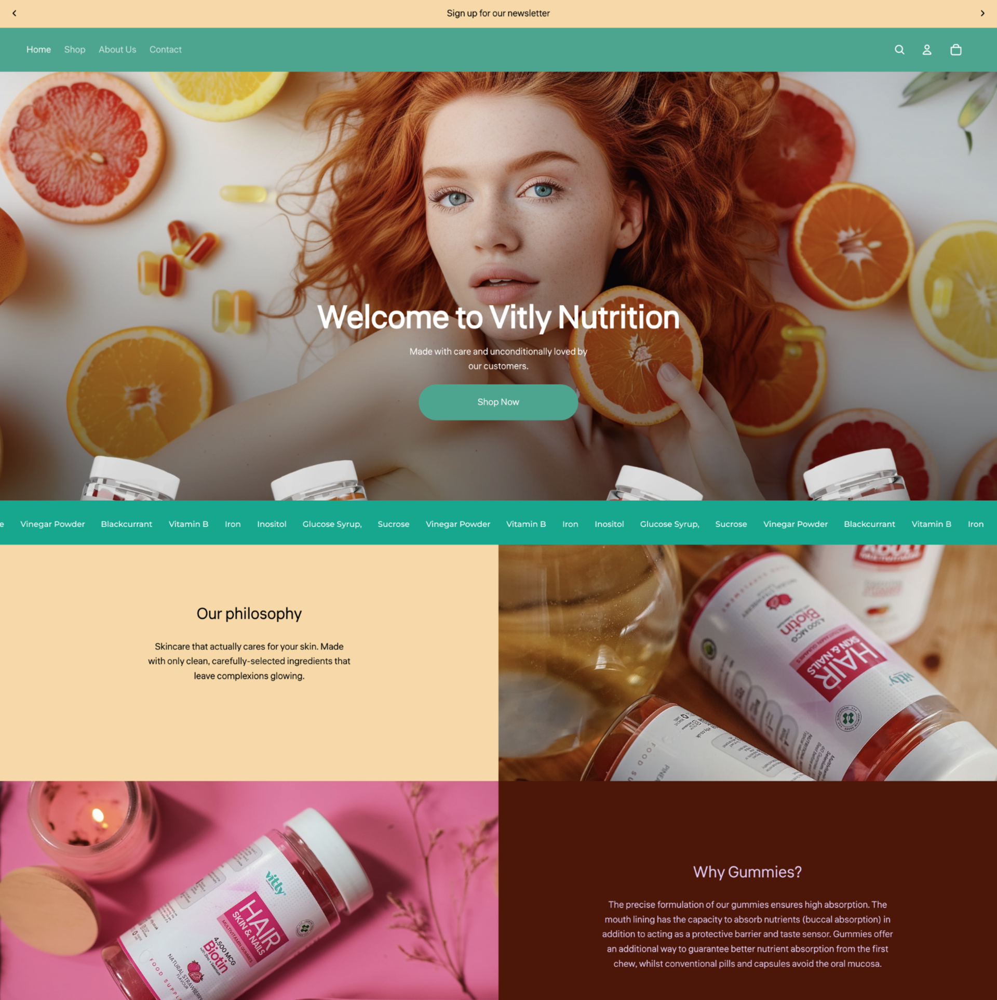
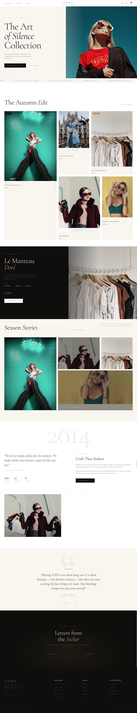

← Previous Project
Shopify E-Commerce
Vitly Nutrition

Next Project →
Restaurant Branding
Aspley Fish Bar

♦ Fashion E-Commerce — Client Project
♦ Project Overview
AURIS is a luxury fashion brand with a philosophy rooted in craft, permanence, and quiet confidence. The brand's ethos — "We do not make clothes for the moment. We make clothes that become a part of who you are." — demanded a digital presence that matched that same level of intention.
The brief was to build an editorial Shopify storefront that could carry seasonal collections — starting with The Art of Silence Collection and The Autumn Edit — while feeling timeless rather than trend-led. Every section was designed to slow the visitor down, invite consideration, and position AURIS as a brand worth knowing.
The result is a refined, image-led e-commerce experience with strong editorial layout, luxurious whitespace, and a warm neutral palette that echoes the brand's tactile, cloth-and-craft identity.
♦ Full Site View
A full scroll of the AURIS website — from the hero collection hero through seasonal editorial, product pages, brand story, and newsletter — showing the complete luxury shopping journey.

♦ What Was Built
Each section of the AURIS site was designed to serve a distinct purpose in the luxury customer journey — from discovery to desire to purchase.
♦ Brand Colours
The AURIS palette is rooted in natural materials and timeless neutrals — warm sand, soft off-white, rich charcoal, and deep stone — reflecting a brand built on enduring craft rather than seasonal colour.
♦ Results

We build fashion e-commerce experiences that feel as premium as the products they sell.
Start Your Fashion Project